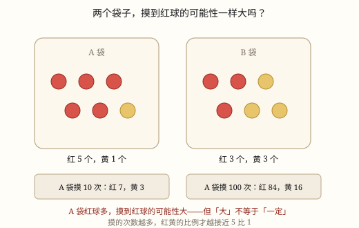

可能性的大小
哪种结果的数量多，那种结果出现的可能性就大；数量一样，可能性一样大。但摸 10 次看不出规律，摸上百次比例才稳——而无论摸多少次，都不能保证下一次。
| 所属主题 | 可能性 |
|---|---|
| 所属模块 | 统计与概率 |
| 课标学段 | 第三学段（5~6年级） |
| 前置知识 | 确定事件与不确定事件 |
| 核心素养 | 数据意识推理意识应用意识 |
课标要求
| 统计与概率·随机现象发生的可能性 | 在实际情境中，对一些简单随机现象发生可能性的大小作出定性描述。 印刷第 40 页 行为动词：掌握 |
|---|---|
| 统计与概率·随机现象发生的可能性 | 通过实例感受简单的随机现象及其结果发生的可能性。 印刷第 40 页 行为动词：经历 |
说明
文具店门口摆着一台抽奖转盘：八个格写着「谢谢参与」，一格「一等奖」，一格「二等奖」。花 2 元转一次，值不值？其实不用算也知道：转到「谢谢参与」的可能性最大，转到一等奖的可能性最小。不确定的事情之间，也有大小之分，这就是这一节要讲的事。
判断依据是数量。袋里 5 个红球、1 个黄球，随手摸一个，摸到红球的可能性大——因为红球多，被碰到的机会自然多。但「大」不等于「一定」：黄球只有 1 个，也仍然可能被摸到（图 1）。
描述可能性，可以排成一条从强到弱的队：一定 > 很可能 > 可能 > 不太可能 > 几乎不可能 > 不可能。同一件事，袋子里的数量一变，它在这条队里的位置就跟着变。说「很可能」和说「不太可能」，都是在描述程度，不是在下结论。
最容易被忽略的是「次数」这件事。 5 红 1 黄的袋子，摸 10 次，结果可能很「离谱」：摸到 3 次黄球不奇怪，一次黄球都没摸到也不奇怪。要是摸 100 次，红黄的比例就慢慢靠近 5 比 1；全班 40 人各摸 10 次、把记录合起来变成 400 次，比例更稳。次数越多，越能看出袋子里的真相；次数太少，看到的多半是运气。
但还有一条底线：无论摸多少次，下一次仍然是「可能」。前面的结果不会「记账」，不会因为黄球很久没出现就「该来了」。可能性大，说的是「重复很多次时更常出现」，不是「这一次一定」。
公平也在这里：让每种结果的可能性一样大，游戏才公平。掷骰子比点数、转盘各占一半、抽签签数相同，都是这个道理。反过来，一个袋里 4 红 1 黄 1 蓝，黄和蓝的可能性一样大，都比红小——比的是个数，不是颜色的种类数。
使用场景
校园生活：摸球决定哪队先开球、抽签决定谁上台，规则公不公平，就看每种结果的可能性是不是一样大。
购物消费：抽奖转盘、盲盒、刮刮卡，「中奖可能性很小」是一句提醒，不是一句保证。
自然现象：天气 App 上写着降水可能性，一周里哪天下雨的可能性大，可以按这个安排户外活动。
上学日常：一个路口红灯 40 秒、绿灯 35 秒、黄灯 3 秒，随机赶到时遇到哪种灯的可能性最大。
饮食与配比：一袋混合糖果里奶糖最多、水果糖最少，闭眼拿一颗，拿到奶糖的可能性最大。
注意点
次数太少别下结论。摸三五次的结果，说明不了袋里什么多什么少。
可能性大不等于一定。中奖可能性很小，也确实有人中；可能性很大，也可能一次不中。
可能性小不等于不可能。只要那种结果还在袋里，它就还有可能出现。
比可能性看个数，不看颜色有几种。4 红 1 黄 1 蓝，红最多，不是「黄蓝两种加起来更多」。
试验要「放回、摇匀」。摸出的球不放回去，袋里的条件就变了，后面的结果不能和前面对比。
为什么是这样

图 1：同一个袋子，摸 10 次和摸 100 次，结果的说服力完全不同——次数越多，越能看出袋里的真相
算理推导
可能性的大小从哪来：袋里一共 6 个球，红 5 黄 1。随手一摸，摸到哪一个事先不知道，但红球占了绝大多数，被碰到的机会自然多。数量多，机会多——这是全部判断的起点。
为什么单次说不准：哪怕红球占绝大多数，也可能刚好摸到那唯一的黄球。所以「可能性大」描述的从来不是这一次，而是「重复很多次时更常出现」。
为什么次数少会「翻车」：摸 10 次，可能 7 红 3 黄，也可能 10 红 0 黄。次数少的时候，偶然占上风，波动大得惊人（图 1 上面那个记录框）。
为什么次数多就稳：摸 100 次、400 次，红黄的比例慢慢靠近 5 比 1（图 1 下面那个记录框）。用很多次的结果去估计一次说不准的事，这是统计最朴素的思想。
所以比较两个袋、两种规则，要么让次数够多，要么把全班的记录合起来看。只看自己那 10 次，很容易得出相反的结论。
公平性检查也在这里：两种结果的数量相同，可能性就一样大。数量一变，公平就被破坏了。
动手实验
袋里放 5 个红球、1 个黄球。先摸 10 次（每次记颜色、放回、摇匀），把红黄次数画成条形图；再摸 100 次，或者全班每人摸 10 次把记录合起来，画第二张条形图。两张图并排看：10 次那张忽高忽低，红黄差得不多；100 次那张明显偏向红。最后把 2 个红球换成黄球（变成 3 红 3 黄），再摸 20 次，你会发现两张图的差别变小了——数量一样，可能性就一样。
按场景的例题
例 1（场景：校园生活） 摸球决定哪队先开球
两队比赛，用一个袋子摸球决定谁先开球：袋里 4 个红球、2 个黄球，摸到红球甲队先，摸到黄球乙队先。这个规则公平吗？怎样改才公平？
解：红球 4 个、黄球 2 个，红球多，摸到红球的可能性大，甲队占便宜，规则不公平。要让两队可能性一样大，两种球的数量必须相同：改成 3 红 3 黄，或者 2 红 2 黄。
答：不公平，甲队先开球的可能性更大。改成红黄各 3 个，两队可能性一样大，才公平。
例 2（场景：购物消费） 十格的抽奖转盘
转盘平均分成 10 格：8 格「谢谢参与」、1 格一等奖、1 格二等奖。转一次，「中奖」和「不中奖」哪个可能性大？能说「转 10 次一定中一次」吗？
解：中奖的只有 2 格，不中奖的有 8 格，所以不中奖的可能性大得多。但「可能性大」只是说重复很多次时更常出现，10 次里一次不中完全可能，也可能连中两次。
答：不中奖的可能性大得多；不能保证「转 10 次中一次」，每一次都是重新开始。
例 3（场景：自然现象） 一周的降水可能性
天气 App 显示：周一降水可能性 10%，周三 60%，周五 90%。哪天最可能下雨？周五的 90% 是不是意味着「一定下雨」？
解：三个数比大小，90% 最大，所以周五下雨的可能性最大。但 90% 仍然不是「一定」——还有 10% 的可能不下，出门带伞更稳妥，但要知道仍可能白带。
答：周五最可能下雨；90% 说的是可能性很大，不是一定。
例 4（场景：上学日常） 路口的信号灯配时
一个路口的信号灯这样循环：红灯亮 40 秒、绿灯亮 35 秒、黄灯亮 3 秒。小舟随机赶到路口，遇到哪种灯的可能性最大？遇到黄灯的可能性比遇到红灯大吗？
解：三种灯亮的时间长短不同，亮得久的那个，随机赶到时碰上的机会就多。40 秒 > 35 秒 > 3 秒，所以红灯的可能性最大，绿灯次之，黄灯最小。
答：遇到红灯的可能性最大；黄灯亮的时间最短，遇到它的可能性最小，比红灯小得多。
常用推论
数量多的那种结果，出现的可能性大；数量相同，可能性就一样大。
可能性大不等于一定发生，可能性小也不等于不可能发生。
试验次数越多，各种结果出现的比例越稳定；次数太少时波动很大，不能据此下结论。
要让游戏公平，就让每种结果的数量相同，使它们的可能性一样大。
比较可能性大小看「个数多少」，不看「有几种颜色」。
易错点
错袋里 5 红 1 黄，摸了 3 次都是黄球，就说「黄球比红球多」。
为什么错3 次太少，偶然完全可能占上风。次数少的时候，摸到的结果反映的是运气，不是袋里的真实情况。
正确多摸几次，或者把全班的记录合起来看。次数够多，红黄的比例才会靠近 5 比 1。
错觉得「中奖可能性大」就一定会中，一口气买了 10 张刮刮卡。
为什么错可能性大描述的是「重复很多次时更常出现」，不是「这一次一定」。每一次都是独立的一次，前面没中不会让后面更容易中。
正确把可能性大理解成「机会更多」，而不是「保证」。花钱之前先想清楚：有可能一次都不中。
错「一等奖的可能性很小」，就说成「不可能中一等奖」。
为什么错把「小」当成了「没有」。只要一等奖还在转盘上，它就仍有可能被转到。
正确说「几乎不可能」或「可能性很小」，不用「不可能」。
错袋里 4 红 1 黄 1 蓝，认为「黄和蓝两种颜色，红只有一种，所以摸到红球的可能性小」。
为什么错比的是颜色的种类数，而不是球的个数。红球 4 个，黄蓝各 1 个，红球最多。
正确看个数：红 4 个最多，可能性最大；黄、蓝各 1 个，可能性一样大，都比红小。
直观理解
往一个方格里撒一把豆子，格子大，落进去的豆子就多。红球就像那个大格子——不是每一颗豆子都落进去，但撒得多了，大格子里的豆子肯定更多。摸的次数，就是撒豆子的次数；只看一两颗豆子落在哪，什么也说明不了。
数量多，可能性大；摸得少，别乱猜；上百次，规律来；可能性大不等于一定来。